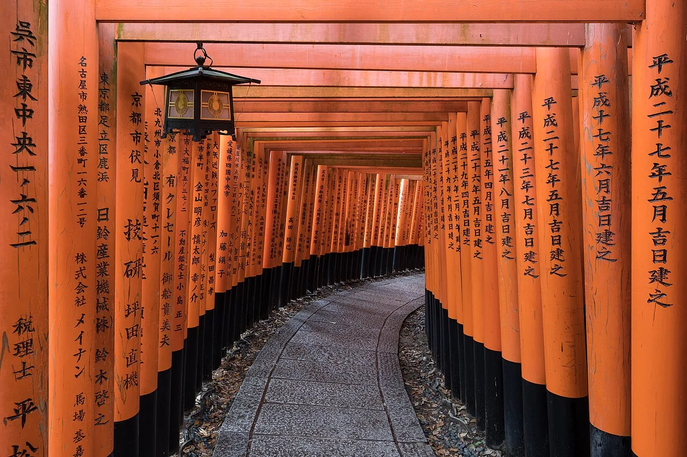

祇園
石畳や町家が残る京都らしい町歩きエリアです。
訪問ガイド
| おすすめ時間 | 夕方前 |
|---|---|
| 所要時間 | 約90分 |
| アクセス | 京阪祇園四条駅 |
| 見どころ | 花見小路、建仁寺、白川 |
時間や料金、拝観ルールは変わることがあります。訪問前に公式情報を確認してください。
ほかのスポット




石畳や町家が残る京都らしい町歩きエリアです。
| おすすめ時間 | 夕方前 |
|---|---|
| 所要時間 | 約90分 |
| アクセス | 京阪祇園四条駅 |
| 見どころ | 花見小路、建仁寺、白川 |
時間や料金、拝観ルールは変わることがあります。訪問前に公式情報を確認してください。
